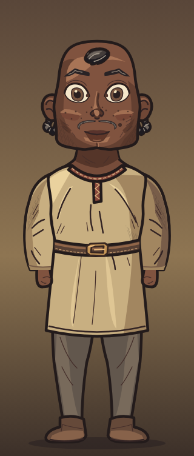
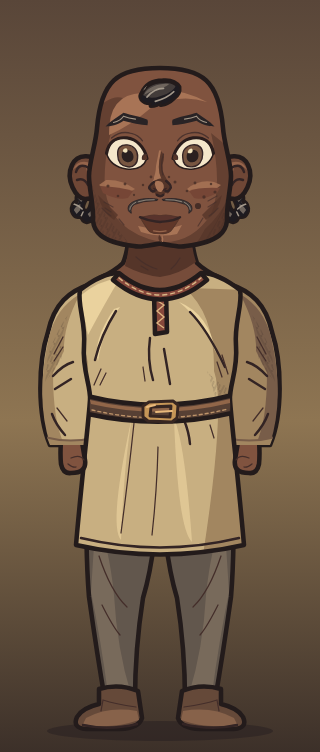

<!doctype html><html lang="ru"><meta charset="utf-8"><meta name="viewport" content="width=device-width,initial-scale=1"><title>Высота угла челюсти</title><style>body{font:16px system-ui;background:#25201b;color:#eee2cd;margin:0 auto;max-width:1280px;padding:1rem}
    a{color:#f4ca91}h1,h2{font:700 1.7rem Georgia,serif}nav ul{columns:3}.grid{display:grid;gap:1rem;
    grid-template-columns:repeat(auto-fit,minmax(230px,1fr))}article{min-width:0;border:1px solid #655343;
    background:#312821;padding:.6rem;border-radius:5px}a img{vertical-align:middle}img{max-width:100%;height:auto}
    .character{display:block;max-height:460px;width:auto;margin:auto}.card{width:32px;height:32px}
    .detail{display:block;width:100%;margin:.35rem 0}.compare{display:flex;align-items:flex-start;gap:.5rem}
    .compare a{flex:1;min-width:0}small{color:#dccab0}code{overflow-wrap:anywhere}@media(max-width:730px){nav ul{columns:1}}</style><main><nav><a href="index.html">Все разделы</a></nav><h1>Высота угла челюсти</h1><div class="grid"><article id="appearance__jaw_height__standard"><h3>Обычная</h3><code>standard</code><a href="images/387a1374c38dd12bcb7b4fe5c428b82185e830ba8d98d89cddeaf94bc9a1cbb7.png"></a><p><a href="images/8caf22f57a749ad0d941f06c7968b3044e0a5a34e25166ece4bab21d1470e094.png"></a> <small>32 × 32</small></p></article>
<article id="appearance__jaw_height__high"><h3>Высокая</h3><code>high</code><a href="images/f5f2efee7020c88f9621206ac9b4a112faea1bcffc7ab37b466067c3a467072b.png"></a><p><a href="images/c2a99efa093b44fa282ad2f463bc397d6b4a137101f57279f9ca6cfca4e2c3b3.png"></a> <small>32 × 32</small></p></article>
<article id="appearance__jaw_height__low"><h3>Низкая</h3><code>low</code><a href="images/ab9f711fa152be5e155f14fc07d0a5656b325b060647bce23b9d68298ece17bc.png"></a><p><a href="images/a2b00c1f8c80f8ecd50e115a8d3fa4de8138d17898395da38ae2d21c18a003c8.png"></a> <small>32 × 32</small></p></article></div></main></html>
